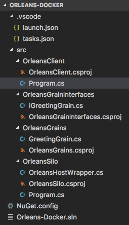

Docker部署
注意：即使你非常熟悉Docker和/或Orleans，就像任何其他Orleans文档一样，我建议你读到最后，以避免你可能面临的问题，我们已经解决了。
注意：本文及其示例是正在进行的工作。任何反馈，公关或建议都是非常欢迎的。
将Orleans解决方案部署到Docker
考虑到Docker Orchestrator和集群堆栈的设计方式，将Orleans部署到Docker可能会很棘手。最复杂的是要理解覆盖网络来自Docker Swarm和Kubernets的网络模型。
Docker容器和网络模型的设计主要是运行无状态和不可变的容器。因此，启动运行node.js或nginx应用程序的集群非常容易。但是，如果您尝试使用更精细的东西，比如真正的集群或分布式应用程序(比如基于Orleans的应用程序)，那么您最终将无法设置它。这是可能的，但不像基于web的应用程序那么简单。
Docker集群包括将多个主机组合成一个资源池，使用容器编排器是的。Docker提供蜂群作为容器编排的选项谷歌有库伯内特斯(又名K8S型)中。还有其他的编曲者像直流/操作系统，介子，等等，但在本文中，我们将讨论swarm和k8s，因为它们使用得更广泛。
同样的grain接口和实现在Orleans的任何地方都已经得到支持，也将在docker容器上运行，因此不需要特别考虑就可以在docker容器中运行您的应用程序。
这个Orleans码头工人示例提供了如何运行两个控制台应用程序的工作示例。一个作为Orleans客户端，另一个作为silos，详细信息如下所述。
这里讨论的概念既可以用于.NET Core，也可以用于.NET 4.6.1版本的Orleans，但是为了说明Docker和.NET Core的跨平台特性，考虑到您正在使用.NET Core，我们将重点讨论这个示例。本文将提供特定于平台(windows/linux/osx)的详细信息。
预备知识
本文假设您安装了以下先决条件：
- 码头工人-Docker4x为主要支持的平台提供了易于使用的安装程序。它包含Docker引擎和Docker Swarm。
- 库伯内特斯(K8S)-谷歌提供的容器编排。它包含安装指南迷你库贝(K8S的本地部署)和库贝克特以及它所有的依赖关系。
- .NET核心-.net的跨平台风格
- Visual Studio代码(VScode)-你想用什么就用什么。vscode是跨平台的，所以我们使用它来确保它可以在所有平台上工作。安装vscode后，请安装C扩展是的。
注意：如果您不打算使用kubernetes，则不需要安装它。Docker4x安装程序已经包含Swarm，因此无需额外安装即可使用。
Windows用户注意事项：在Windows上，Docker安装程序将在安装过程中启用Hyper-V。由于本文及其示例使用的是.NET Core，因此使用的容器映像基于Windows服务器NanoServer是的。如果您不打算使用.net core并将目标锁定为.net 4.6.1full framework，则使用的映像应该是Windows服务器核心以及Orleans的1.4+版本(仅支持.NET完整框架)。
创建Orleans解决方案
下面的说明演示如何使用点网工具。
注意：请根据您的平台中的适当情况调整命令。另外，目录结构只是一个建议。请根据您的需要调整它。
mkdir Orleans-Docker
cd Orleans-Docker
dotnet new sln
mkdir -p src/OrleansSilo
mkdir -p src/OrleansClient
mkdir -p src/OrleansGrains
mkdir -p src/OrleansGrainInterfaces
dotnet new console -o src/OrleansSilo --framework netcoreapp1.1
dotnet new console -o src/OrleansClient --framework netcoreapp1.1
dotnet new classlib -o src/OrleansGrains --framework netstandard1.5
dotnet new classlib -o src/OrleansGrainInterfaces --framework netstandard1.5
dotnet sln add src/OrleansSilo/OrleansSilo.csproj
dotnet sln add src/OrleansClient/OrleansClient.csproj
dotnet sln add src/OrleansGrains/OrleansGrains.csproj
dotnet sln add src/OrleansGrainInterfaces/OrleansGrainInterfaces.csproj
dotnet add src/OrleansClient/OrleansClient.csproj reference src/OrleansGrainInterfaces/OrleansGrainInterfaces.csproj
dotnet add src/OrleansSilo/OrleansSilo.csproj reference src/OrleansGrainInterfaces/OrleansGrainInterfaces.csproj
dotnet add src/OrleansGrains/OrleansGrains.csproj reference src/OrleansGrainInterfaces/OrleansGrainInterfaces.csproj
dotnet add src/OrleansSilo/OrleansSilo.csproj reference src/OrleansGrains/OrleansGrains.csproj
到目前为止，我们所做的只是创建解决方案结构、项目和在项目之间添加引用的样板代码。没有什么不同于常规的Orleans项目。
在撰写本文时，Orleans 2.0(这是唯一支持.NET Core和跨平台的版本)已经进入了技术预览版，因此它的nuget托管在myget feed中，而不是发布到nuget.org官方feed。为了安装preview nuget，我们将使用点网cli强制myget提供源提要和版本：
dotnet add src/OrleansClient/OrleansClient.csproj package Microsoft.Orleans.Core -s https://dotnet.myget.org/F/orleans-prerelease/api/v3/index.json -v 2.0.0-preview2-201705020000
dotnet add src/OrleansGrainInterfaces/OrleansGrainInterfaces.csproj package Microsoft.Orleans.Core -s https://dotnet.myget.org/F/orleans-prerelease/api/v3/index.json -v 2.0.0-preview2-201705020000
dotnet add src/OrleansGrains/OrleansGrains.csproj package Microsoft.Orleans.Core -s https://dotnet.myget.org/F/orleans-prerelease/api/v3/index.json -v 2.0.0-preview2-201705020000
dotnet add src/OrleansSilo/OrleansSilo.csproj package Microsoft.Orleans.Core -s https://dotnet.myget.org/F/orleans-prerelease/api/v3/index.json -v 2.0.0-preview2-201705020000
dotnet add src/OrleansSilo/OrleansSilo.csproj package Microsoft.Orleans.OrleansRuntime -s https://dotnet.myget.org/F/orleans-prerelease/api/v3/index.json -v 2.0.0-preview2-201705020000
dotnet restore
好了，现在您已经拥有了运行一个简单的Orleans应用程序的所有基本依赖项。请注意，到目前为止，您的常规Orleans申请没有任何变化。现在，让我们添加一些代码，这样我们就可以用它做些什么了。
实现您的Orleans应用程序
假设你正在使用甚小码，从解决方案目录中运行代码。是的。将在中打开目录的甚小码并加载解决方案。
这是我们刚才创建的解决方案结构。

我们还添加了程序.cs，Orleans鞋类包装，冰谷和迎宾粮分别指向接口和Grain项目的文件，以下是这些文件的代码：
igreetinggrain.cs以下内容：
using System;
using System.Threading.Tasks;
using Orleans;
namespace OrleansGrainInterfaces
{
public interface IGreetingGrain : IGrainWithGuidKey
{
Task<string> SayHello(string name);
}
}
GreetingGrain.cs以下内容：
using System;
using System.Threading.Tasks;
using OrleansGrainInterfaces;
namespace OrleansGrains
{
public class GreetingGrain : Grain, IGreetingGrain
{
public Task<string> SayHello(string name)
{
return Task.FromResult($"Hello from Orleans, {name}");
}
}
}
OrleanshostWrapper.cs以下内容：
using System;
using System.Net;
using Orleans.Runtime;
using Orleans.Runtime.Configuration;
using Orleans.Runtime.Host;
namespace OrleansSilo
{
public class OrleansHostWrapper
{
private readonly SiloHost siloHost;
public OrleansHostWrapper(ClusterConfiguration config)
{
siloHost = new SiloHost(Dns.GetHostName(), config);
siloHost.LoadOrleansConfig();
}
public int Run()
{
if (siloHost == null)
{
return 1;
}
try
{
siloHost.InitializeOrleansSilo();
if (siloHost.StartOrleansSilo())
{
Console.WriteLine($"Successfully started Orleans silo '{siloHost.Name}' as a {siloHost.Type} node.");
return 0;
}
else
{
throw new OrleansException($"Failed to start Orleans silo '{siloHost.Name}' as a {siloHost.Type} node.");
}
}
catch (Exception exc)
{
siloHost.ReportStartupError(exc);
Console.Error.WriteLine(exc);
return 1;
}
}
public int Stop()
{
if (siloHost != null)
{
try
{
siloHost.StopOrleansSilo();
siloHost.Dispose();
Console.WriteLine($"Orleans silo '{siloHost.Name}' shutdown.");
}
catch (Exception exc)
{
siloHost.ReportStartupError(exc);
Console.Error.WriteLine(exc);
return 1;
}
}
return 0;
}
}
}
程序.cs(silos)：
using System;
using System.Collections.Generic;
using System.Linq;
using System.Net;
using Orleans.Runtime.Configuration;
namespace OrleansSilo
{
public class Program
{
private static OrleansHostWrapper hostWrapper;
static int Main(string[] args)
{
int exitCode = InitializeOrleans();
Console.WriteLine("Press Enter to terminate...");
Console.ReadLine();
exitCode += ShutdownSilo();
return exitCode;
}
private static int InitializeOrleans()
{
var config = new ClusterConfiguration();
config.Globals.DataConnectionString = "[AZURE STORAGE CONNECTION STRING HERE]";
config.Globals.DeploymentId = "Orleans-Docker";
config.Globals.LivenessType = GlobalConfiguration.LivenessProviderType.AzureTable;
config.Globals.ReminderServiceType = GlobalConfiguration.ReminderServiceProviderType.AzureTable;
config.Defaults.PropagateActivityId = true;
config.Defaults.ProxyGatewayEndpoint = new IPEndPoint(IPAddress.Any, 10400);
config.Defaults.Port = 10300;
var ips = Dns.GetHostAddressesAsync(Dns.GetHostName()).Result;
config.Defaults.HostNameOrIPAddress = ips.FirstOrDefault()?.ToString();
hostWrapper = new OrleansHostWrapper(config);
return hostWrapper.Run();
}
private static int ShutdownSilo()
{
if (hostWrapper != null)
{
return hostWrapper.Stop();
}
return 0;
}
}
}
程序.cs(客户)：
using System;
using System.Net;
using System.Threading;
using System.Threading.Tasks;
using Orleans;
using Orleans.Runtime.Configuration;
using OrleansGrainInterfaces;
namespace OrleansClient
{
class Program
{
private static IClusterClient client;
private static bool running;
static void Main(string[] args)
{
Task.Run(() => InitializeOrleans());
Console.ReadLine();
running = false;
}
static async Task InitializeOrleans()
{
var config = new ClientConfiguration();
config.DeploymentId = "Orleans-Docker";
config.PropagateActivityId = true;
var hostEntry = await Dns.GetHostEntryAsync("orleans-silo");
var ip = hostEntry.AddressList[0];
config.Gateways.Add(new IPEndPoint(ip, 10400));
Console.WriteLine("Initializing...");
client = new ClientBuilder().UseConfiguration(config).Build();
await client.Connect();
running = true;
Console.WriteLine("Initialized!");
var grain = client.GetGrain<IGreetingGrain>(Guid.Empty);
while(running)
{
var response = await grain.SayHello("Gutemberg");
Console.WriteLine($"[{DateTime.UtcNow}] - {response}");
await Task.Delay(1000);
}
client.Dispose();
}
}
}
我们不在这里详细讨论grain实现，因为它超出了本文的范围。请检查其他相关文件。这些文件本质上是一个最小的Orleans应用程序，我们将从它开始，继续本文的其余部分。
注意：在本文中，我们使用
奥利安萨祖鲁提尔会员资格提供商，但您可以使用Orleans已经支持的任何其他服务。
停靠文件
为了创建容器，Docker使用图像。有关如何创建自己的详细信息，可以查看Docker文档是的。在本文中，我们将使用Microsoft图像是的。基于目标和开发平台，您需要选择适当的映像。在本文中，我们使用微软/dotnet:1.1.2-sdk这是一个基于linux的图像。你可以用microsoft/dotnet:1.1.2-sdk-nanoserver以windows为例。选一个适合你需要的。
Windows用户注意事项：如前所述，为了跨平台，我们在本文中使用.NET Core和Orleans Technical Preview 2.0。如果要在Windows上使用Docker和完全发布的Orleans 1.4+，则需要使用基于Windows Server Core的映像，因为基于NanoServer和Linux的映像仅支持.NET Core。
Dockerfile.debug以下内容：
FROM microsoft/dotnet:1.1.2-sdk
ENV NUGET_XMLDOC_MODE skip
WORKDIR /vsdbg
RUN apt-get update \
&& apt-get install -y --no-install-recommends \
unzip \
&& rm -rf /var/lib/apt/lists/* \
&& curl -sSL https://aka.ms/getvsdbgsh | bash /dev/stdin -v latest -l /vsdbg
WORKDIR /app
ENTRYPOINT ["tail", "-f", "/dev/null"]
这个dockerfile实质上是下载并安装vsdbg调试器，并启动一个空容器，使其永远保持活动状态，这样我们在调试时就不需要拆下/拆下。
现在，对于生产，映像更小，因为它只包含.NET核心运行时，而不包含整个sdk，dockerfile更简单一些：
停靠文件以下内容：
FROM microsoft/dotnet:1.1.2-runtime
WORKDIR /app
ENTRYPOINT ["dotnet", "OrleansSilo.dll"]
COPY . /app
Docker合成
这个docker-compose.yml文件文件，本质上定义(在项目内)一组服务及其在服务级别上的依赖关系。每个服务包含给定容器的一个或多个实例，该实例基于您在DockerFile上选择的图像。更多关于Docker合成可以在上找到Docker编写文档是的。
对于Orleans部署，一个常见的用例是docker-compose.yml文件其中包含两个服务。一个给Orleanssilos，另一个给Orleans客户。客户端将依赖于silos，这意味着，它只能在silos服务启动后启动。另一种情况是添加一个存储/数据库服务/容器，例如sql server，它应该首先在客户端和silos之前启动，因此两个服务都应该依赖于它。
注意：在你进一步阅读(并最终疯狂阅读)之前，请注意凹痕 事项在里面
Docker合成文件夹。所以如果你有什么问题就要注意了。
以下是我们将如何描述我们为本文提供的服务：
docker-compose.override.yml文件(调试)：
version: '3.1'
services:
orleans-client:
image: orleans-client:debug
build:
context: ./src/OrleansClient/bin/PublishOutput/
dockerfile: Dockerfile.Debug
volumes:
- ./src/OrleansClient/bin/PublishOutput/:/app
- ~/.nuget/packages:/root/.nuget/packages:ro
depends_on:
- orleans-silo
orleans-silo:
image: orleans-silo:debug
build:
context: ./src/OrleansSilo/bin/PublishOutput/
dockerfile: Dockerfile.Debug
volumes:
- ./src/OrleansSilo/bin/PublishOutput/:/app
- ~/.nuget/packages:/root/.nuget/packages:ro
docker-compose.yml文件(生产)：
version: '3.1'
services:
orleans-client:
image: orleans-client
depends_on:
- orleans-silo
orleans-silo:
image: orleans-silo
注意，在生产中，我们没有映射本地目录，也没有生成：行动。原因是在生产中，图像应该被构建并推送到您自己的Docker注册表中。
把所有的东西放在一起
现在我们有了运行您的Orleans应用程序所需的所有移动部件，我们将把它们放在一起，以便在Docker中运行我们的Orleans解决方案(最后！)是的。
注意：应在解决方案目录中执行以下命令。
首先，让我们确保从我们的解决方案还原所有的nuget包。你只需要做一次。只有在更改项目上的任何包依赖项时，才需要再次执行此操作。
#dotnet还原
现在，让我们使用点网像往常一样使用cli并将其发布到输出目录：
#dotnet发布-o./bin/publishoutput
注意：我们正在使用
出版这里不是构建，而是为了避免我们在Orleans装载dynamicaly的汇编出现问题。我们仍在寻找更好的解决办法。
随着应用程序的构建和发布，您需要构建Dockerfile映像。每个项目只需要执行一次此步骤，并且只有在更改dockerfile、docker compose或由于任何原因清理本地映像注册表时，才应再次执行此步骤。
#Docker合成生成
两种图像中使用的所有图像停靠文件和docker-compose.yml文件从注册表中提取并缓存在开发计算机上。你的形象已经建立，你都准备好了。
现在让我们运行它！
# docker-compose up -d
Creating network "orleansdocker_default" with the default driver
Creating orleansdocker_orleans-silo_1 ...
Creating orleansdocker_orleans-silo_1 ... done
Creating orleansdocker_orleans-client_1 ...
Creating orleansdocker_orleans-client_1 ... done
#
现在如果你运行Docker撰写PS，您将看到2个容器正在运行Orleans道克项目：
# docker-compose ps
Name Command State Ports
------------------------------------------------------------------
orleansdocker_orleans-client_1 tail -f /dev/null Up
orleansdocker_orleans-silo_1 tail -f /dev/null Up
Windows用户注意事项：如果您在Windows上，并且容器使用Windows映像作为基础，则命令列将显示powershell相对于
尾在*nix系统上，这样容器将保持相同的方式。
既然你已经准备好了容器，你不需要每次启动Orleans应用程序时都停止它。您只需要集成您的ide来调试以前映射到您的docker-compose.yml文件是的。
缩放比例
运行compose项目后，可以使用Docker合成比例命令：
# docker-compose scale orleans-silo=15
Starting orleansdocker_orleans-silo_1 ... done
Creating orleansdocker_orleans-silo_2 ...
Creating orleansdocker_orleans-silo_3 ...
Creating orleansdocker_orleans-silo_4 ...
Creating orleansdocker_orleans-silo_5 ...
Creating orleansdocker_orleans-silo_6 ...
Creating orleansdocker_orleans-silo_7 ...
Creating orleansdocker_orleans-silo_8 ...
Creating orleansdocker_orleans-silo_9 ...
Creating orleansdocker_orleans-silo_10 ...
Creating orleansdocker_orleans-silo_11 ...
Creating orleansdocker_orleans-silo_12 ...
Creating orleansdocker_orleans-silo_13 ...
Creating orleansdocker_orleans-silo_14 ...
Creating orleansdocker_orleans-silo_15 ...
Creating orleansdocker_orleans-silo_6
Creating orleansdocker_orleans-silo_5
Creating orleansdocker_orleans-silo_3
Creating orleansdocker_orleans-silo_2
Creating orleansdocker_orleans-silo_4
Creating orleansdocker_orleans-silo_9
Creating orleansdocker_orleans-silo_7
Creating orleansdocker_orleans-silo_8
Creating orleansdocker_orleans-silo_10
Creating orleansdocker_orleans-silo_11
Creating orleansdocker_orleans-silo_15
Creating orleansdocker_orleans-silo_12
Creating orleansdocker_orleans-silo_14
Creating orleansdocker_orleans-silo_13
几秒钟后，您将看到服务扩展到您请求的特定实例数。
# docker-compose ps
Name Command State Ports
------------------------------------------------------------------
orleansdocker_orleans-client_1 tail -f /dev/null Up
orleansdocker_orleans-silo_1 tail -f /dev/null Up
orleansdocker_orleans-silo_10 tail -f /dev/null Up
orleansdocker_orleans-silo_11 tail -f /dev/null Up
orleansdocker_orleans-silo_12 tail -f /dev/null Up
orleansdocker_orleans-silo_13 tail -f /dev/null Up
orleansdocker_orleans-silo_14 tail -f /dev/null Up
orleansdocker_orleans-silo_15 tail -f /dev/null Up
orleansdocker_orleans-silo_2 tail -f /dev/null Up
orleansdocker_orleans-silo_3 tail -f /dev/null Up
orleansdocker_orleans-silo_4 tail -f /dev/null Up
orleansdocker_orleans-silo_5 tail -f /dev/null Up
orleansdocker_orleans-silo_6 tail -f /dev/null Up
orleansdocker_orleans-silo_7 tail -f /dev/null Up
orleansdocker_orleans-silo_8 tail -f /dev/null Up
orleansdocker_orleans-silo_9 tail -f /dev/null Up
注意：的
命令关于这些例子的专栏显示了尾命令，因为我们正在使用调试器容器。如果我们在制作的话dotnet OrleansSilo.dll例如。
码头群
Docker集群堆栈被调用蜂群你可以通过阅读它找到更多此处为文档是的。
在蜂群群集，你没有任何额外的工作。当你跑的时候Docker组合-D在一个蜂群节点，它将根据配置的规则调度容器。这同样适用于其他基于swarm的服务，如Docker数据中心，天青ACS(在群模式下)AWS ECS集装箱服务等等。你要做的就是部署你的蜂群在部署之前群集停靠Orleans申请。
注意：如果您使用的Docker引擎具有Swarm模式，并且已经支持
堆栈，部署和组成v3，部署解决方案的更好方法是docker stack deploy-c docker-compose.yml<name>. 请记住，它需要在Docker引擎上提供V3组合文件支持，而大多数托管服务(如Azure和AWS)仍然使用V2和更旧的引擎。
谷歌Kubernetes(K8S)
如果你打算使用库伯内特斯要托管Orleans，可以在OrleansContrib\Orleans.Clustering.Kubernetes在那里，您可以找到关于如何使用提供者无缝地在Kubernetes托管Orleans的文档和示例。
[奖励主题]在容器中调试Orleans
好吧，既然你知道如何从头开始在一个容器中运行Orleans，那么利用Docker中最重要的原则之一就很好了。容器是不可变的。而且它们在开发中应该(几乎)具有与生产中相同的映像、依赖项和运行时。这确保了良好的旧声明“它在我的机器上工作！”再也不会发生了。要做到这一点，你需要有一种发展的方式里面容器和其中包含一个调试器，该调试器附加到容器内的应用程序。
有多种方法可以使用多种工具实现这一点。在评估了几个之后，在撰写本文时，我最终选择了一个看起来更简单、在应用程序中侵入性更小的。
正如本文前面提到的，我们使用甚小码为了开发这个示例，下面是如何将调试器附加到容器中的orleans应用程序。
首先，在你的.vscode代码解决方案中的目录：
tasks.json任务以下内容：
{
"version": "0.1.0",
"command": "dotnet",
"isShellCommand": true,
"args": [],
"tasks": [
{
"taskName": "publish",
"args": [
"${workspaceRoot}/Orleans-Docker.sln", "-c", "Debug", "-o", "./bin/PublishOutput"
],
"isBuildCommand": true,
"problemMatcher": "$msCompile"
}
]
}
这个文件实际上告诉甚小码无论何时构建项目，它都将实际执行出版命令，就像我们之前手动执行的那样。
launch.json启动以下内容：
{
"version": "0.2.0",
"configurations": [
{
"name": "Silo",
"type": "coreclr",
"request": "launch",
"cwd": "/app",
"program": "/app/OrleansSilo.dll",
"sourceFileMap": {
"/app": "${workspaceRoot}/src/OrleansSilo"
},
"pipeTransport": {
"debuggerPath": "/vsdbg/vsdbg",
"pipeProgram": "/bin/bash",
"pipeCwd": "${workspaceRoot}",
"pipeArgs": [
"-c",
"docker exec -i orleansdocker_orleans-silo_1 /vsdbg/vsdbg --interpreter=vscode"
]
}
},
{
"name": "Client",
"type": "coreclr",
"request": "launch",
"cwd": "/app",
"program": "/app/OrleansClient.dll",
"sourceFileMap": {
"/app": "${workspaceRoot}/src/OrleansClient"
},
"pipeTransport": {
"debuggerPath": "/vsdbg/vsdbg",
"pipeProgram": "/bin/bash",
"pipeCwd": "${workspaceRoot}",
"pipeArgs": [
"-c",
"docker exec -i orleansdocker_orleans-client_1 /vsdbg/vsdbg --interpreter=vscode"
]
}
}
]
}
现在你可以从甚小码(将发布)并启动silos和客户端。它将发送一个Docker执行官运行命令Docker合成服务实例/容器来启动应用程序的调试器。将调试器附加到容器，并将其用作本地运行的Orleans应用程序。现在的区别是它在容器中，完成后，只需将容器发布到注册表并在生产中的Docker主机上拉取它。